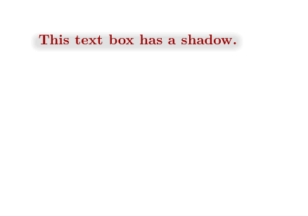
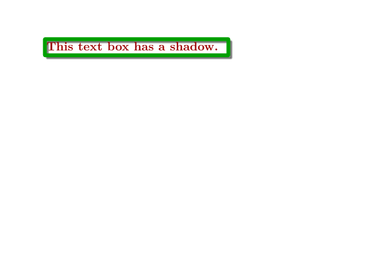

So you’d like to have one of these nice drop shadows behind some object? Here’s a piece of code to play with:
-
\startuniqueMPgraphic{mpshadow} % BodyFontSize should be the current font size of/in the frame mw := BodyFontSize/3; ox := -0.5 ; % offset x oy := -0.5 ; % offset y bx := 1.5mw ; % bleed x (height of the shadow) by := 1.5mw ; % bleed y (width of the shadow) rx := 3mw ; % max. corner radius x ry := 2mw ; % max. corner radius y steps := 10 ; % number of shadow layers, 10 is a good value hue := 0.015 ; % 0.02 is a good value ycorr := 1mw ; % difference between overlay height and shadow height for step = 1 upto steps: part := (step-1)/steps; xstep := bx * part ; % current part of bleed ystep := by * part ; crx := (rx + rx*part)/2; % current radius cry := (ry + ry*part)/2; % points of the rounded rectangle xa := -xstep + ox; xb := -xstep + ox + crx; xc := xstep + ox - crx + \overlaywidth; xd := xstep + ox + \overlaywidth; ya := -ystep + ycorr + oy; yb := -ystep + ycorr + oy + cry; yc := ystep - ycorr + oy - cry + \overlayheight; yd := ystep - ycorr + oy + \overlayheight; fill (xb, ya)--- (xc, ya)... (xd, yb)--- (xd, yc)... (xc, yd)--- (xb, yd)... (xa, yc)--- (xa, yb)...cycle withcolor transparent(1, hue, black) ; endfor; setbounds currentpicture to OverlayBox ; \stopuniqueMPgraphic \defineoverlay[shadow][\useMPgraphic{mpshadow}] \setuppapersize[A8,landscape] \setupheadertexts[] \starttext \inframed [frame=off, background=shadow, foregroundcolor=darkred] {\bfa This text box has a shadow.} \stoptext
- 
Here is a different approach, taken from the simpleslides module. You can play with the parameters:
-
\startuniqueMPgraphic{mpshadow} numeric a ; a := \overlaywidth * 1.05 ; numeric b ; b := \overlayheight * 1.05 ; numeric c ; c := 3pt ; path p ; p = (0, 0) -- (0, b) -- (a, b) -- (a, 0) -- cycle ; pickup pencircle scaled c ; for i = 1 upto 20 : draw p shifted (2, -2) withcolor transparent (1, 0.04, black) withpen pencircle scaled (i*c/20) ; endfor ; draw p withcolor darkgreen ; setbounds currentpicture to OverlayBox ; \stopuniqueMPgraphic \defineoverlay[shadow][\useMPgraphic{mpshadow}] \setuppapersize[A7,landscape] \setupheadertexts[] \starttext \inframed [frame=off, background=shadow, foregroundcolor=darkred] {\bfa This text box has a shadow.} \stoptext
- 